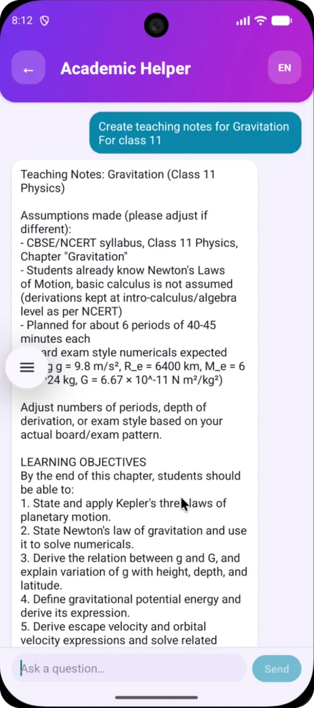
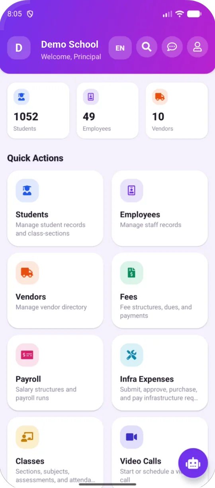

AI
An AI helper for every teacher, inside the school app
No separate tool to learn and no extra login. The AI helpdesk assistant sits in the same Smart Gurukul app teachers already use for attendance and marks.
In short: Smart Gurukul has an AI helpdesk assistant built into the app. Teachers ask it for teaching notes and explanations, principals and office staff ask it about the school’s records, and students use it for help with a topic. It is part of the app, not a separate paid add-on.

For teachers
Lesson preparation, in the app
A teacher types what they need, such as “teaching notes for Gravitation, Class 11”, and the AI helper drafts it right there.
- Teaching notes for a chapter or topic.
- Explanations of a concept, pitched at the class level.
- A starting point, not a final answer: teachers review and adjust before using anything in class.

For the office and students
One assistant for the whole school
The same AI helpdesk assistant is one tap away on the principal’s dashboard and in the student app.
- Principals and office staff: ask about the school’s records in plain words, such as fee dues or attendance.
- Students: ask for help understanding a topic they’re studying.
- Everyone: it opens like a chat, so there’s nothing new to learn.
Built with care
How the AI treats your school’s data
No free-form database access
The assistant can’t write its own database queries. It can only use a fixed set of checked lookups.
School figures for admins only
Questions about school-wide records, like fee dues and payroll, are answered only for admin accounts.
Your school only
Every lookup is locked to the school you are signed in to.
FAQ
AI in school: common questions
What does the AI in Smart Gurukul do?
Smart Gurukul has an AI helpdesk assistant inside the app. Teachers use it for teaching notes and explanations, principals and office staff ask it about the school’s records, and students use it for help with a topic.
Is the AI a separate paid add-on?
No. The AI helpdesk assistant is part of the Smart Gurukul app.
Can the AI see other schools’ data?
No. Every lookup is locked to the school you are signed in to, and the assistant can only use a fixed set of checked lookups rather than writing its own database queries.
Should teachers use AI-written notes as they are?
No. Treat them as a first draft. Teachers should always review and adjust AI-written material before using it in class.
Can the AI make quizzes?
Yes. Teachers and principals can generate quiz questions with AI for their subject and class, review them, and add them to the question bank used in Battle Rooms and the Arena.